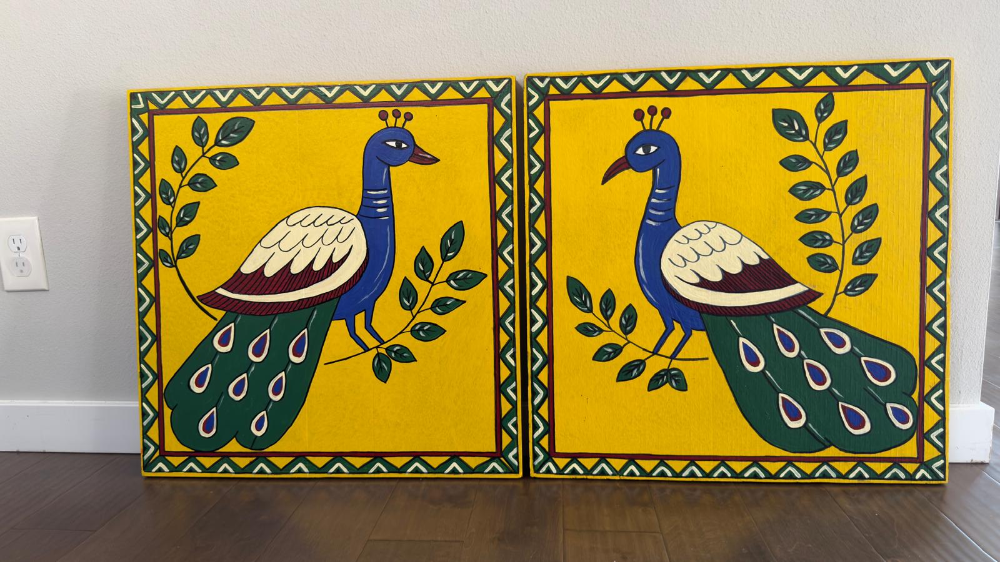
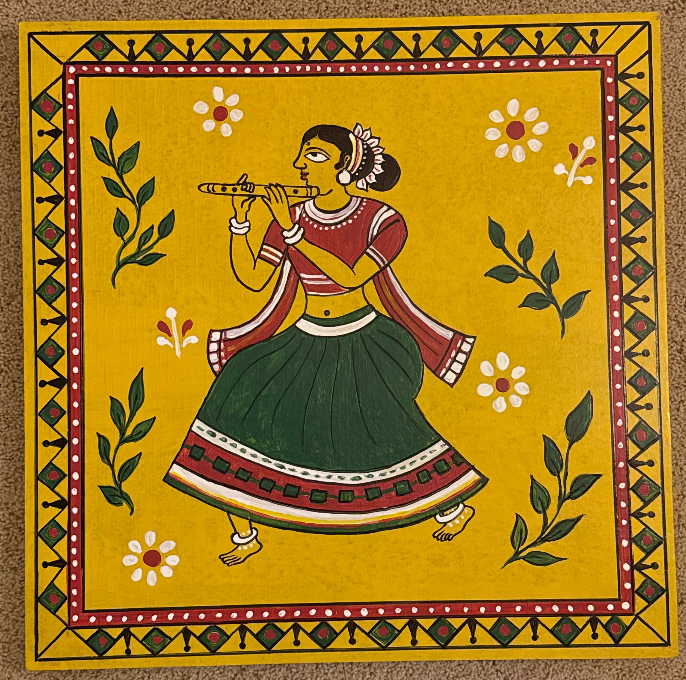
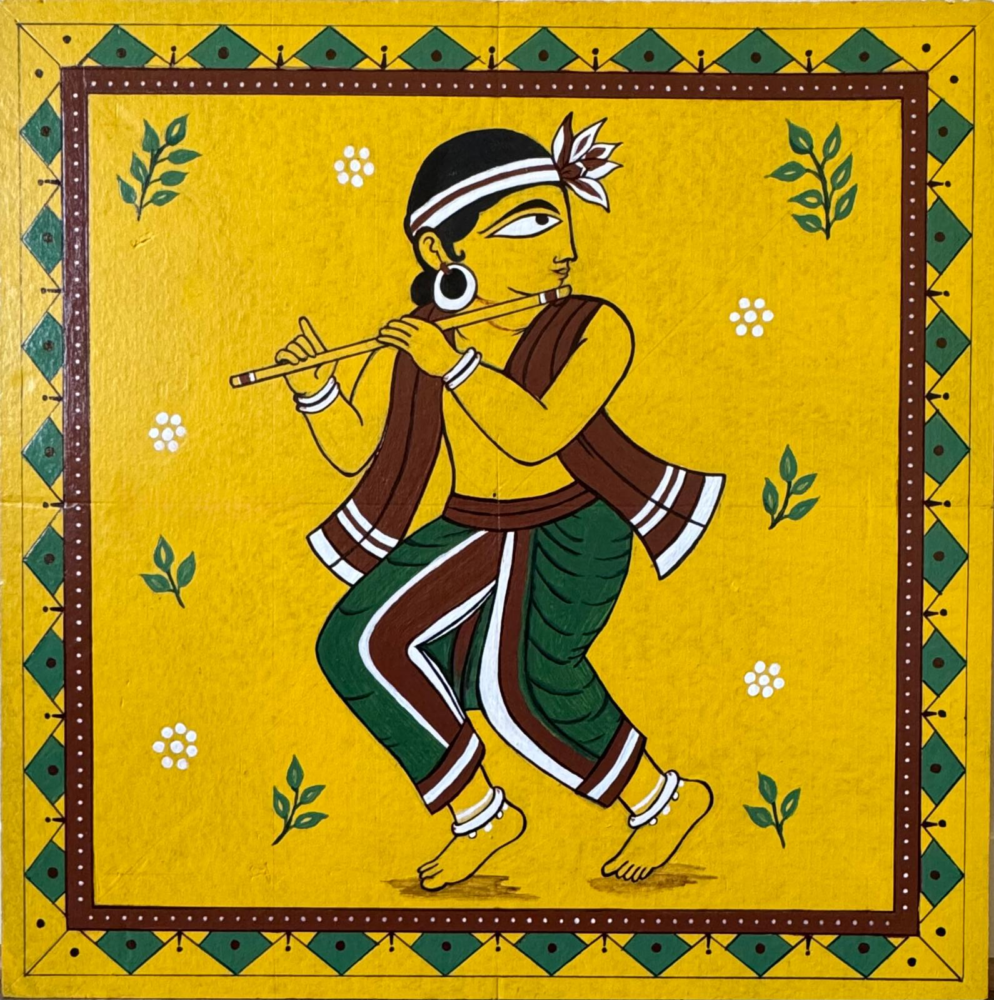
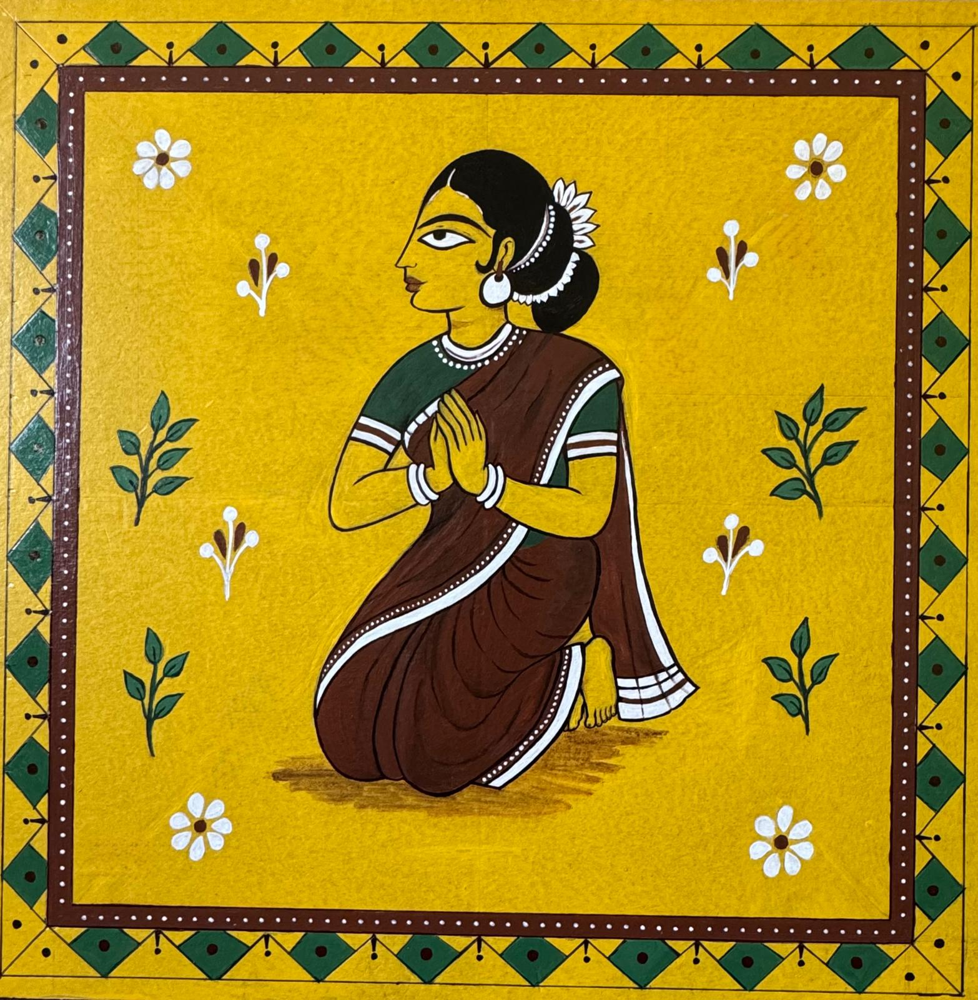

Seattle-Tacoma International Airport · SEA · September 2026
Uttoron's contribution to Bengali folk art forms
These painted panels are Uttoron’s contribution to Bengali folk art forms: flat color, a dark outline, and borders made to be read while walking. The show proposed here is for Seattle-Tacoma International Airport in Seattle, under the Port of Seattle. It is not a proposal for Chicago.
What you are looking at
Six views are finished panels, photographed straight on or standing. One shows the larger river panels outdoors, so the scale is visible. Snapshots that do not show the work clearly were left out.
Artist names and short biographies are not on this page yet. They will sit under each panel when Uttoron sends them. Until then, every panel is community work from Uttoron in Seattle.
A short history of Pattachitra
Pattachitra is a cloth-painting tradition from eastern India. The name is literal: patta is cloth, or a prepared canvas, and chitra is a picture. Two living lines share the name. One belongs to Odisha. The other belongs to Bengal. They are related, and they are not the same school.
Odisha
This is the look these panels most closely follow. The craft grew around Puri and the Jagannath temple. Painter families, the chitrakaras, made images for worship and for telling sacred stories when the temple deities were secluded, or when a pilgrim wanted a picture to carry home. Handicraft accounts place the settled practice by about the 12th century. Usual subjects are Jagannath with Balabhadra and Subhadra, the ten avatars, the Ramayana, and Krishna’s life, including Krishna with the flute. A well-known working center today is Raghurajpur, near Puri, where families still teach the craft.
The surface is prepared. Cotton is coated with tamarind-seed paste and chalk or powdered stone until the cloth is firm and smooth. Color sits in flat fields. A fine black line finishes the drawing. A lacquer coat can seal it. Older painters mixed color from what was at hand: white from processed shells, black from lamp soot, yellow from mineral pigment, red from mineral stone. A face is shown in profile, with one enlarged eye, no receding space, and a decorated border that holds the scene.
Bengal
Bengali patachitra is a scroll for telling a story, made especially by patua families in western Bengal, with a strong center in Medinipur. A long cloth is painted in stacked scenes. The painter unrolls it while singing, the pater gaan. Older themes include local goddess legends, Krishna, and episodes from the epics. In the last century many patuas also painted floods, wars, and public stories in the same format.
Kalighat painting, which grew near the Kalighat temple in 19th-century Calcutta, is a cousin: quicker watercolors on paper for pilgrims, with the same bold outline, and a taste for both gods and everyday satire.
The flute
Krishna playing the flute is one of his standard visual names, not a portrait of a musician. In the devotional stories the music draws people, cattle, and Radha toward him. Odisha Pattachitra places that scene beside Jagannath, worshipped there as a form of Krishna. Bengal’s scrolls tell the same stories, usually as a sequence of frames rather than one open field.
Uttoron’s panels use that Odisha vocabulary: an open yellow ground, a profile eye, a hard contour, and a geometric frame. They are more spacious than densely filled classical pattachitra, and they are painted wooden display panels, not ritual cloth made for Puri. Nothing in these photographs shows a signature or an inscription, so the boards stay contemporary community work. They are offered here as Uttoron’s contribution to that eastern folk-art line.
Beside what is already at SEA
Seattle-Tacoma International Airport keeps a permanent public-art collection, listed by concourse on the Port of Seattle’s Public Art Collection page. The four works below are already in that collection. Their photographs stay on the Port’s site. This page names them, links to them, and compares them with Uttoron’s panels. It does not reproduce those artists’ images.
Nancy Blum. Sixty-five flowers across a wall 77 feet wide, above the A Concourse station. The nearest neighbor: a repeated botanical pattern meant to be read while walking.
John Grade. A cantilevered root-like sculpture about 40 by 85 by 25 feet, built for the North Satellite. This is architecture-scale and site-made. Uttoron’s boards are portable paintings, not a work of this size.
Marela Zacarías. Five color-soaked sculptures, about 50 feet in extent, built in Seattle from the region’s palette. Strong color in a glass hall. Uttoron’s color is flatter and carried on individual panels.
What the comparison shows
SEA’s permanent pieces are commissioned, credited to named artists, and usually built for one place. Flower Wall is the closest in spirit: pattern, plants, and a long glance. Boundary, Blackleaf, and Chalchiuhtlicue show the other end, work that occupies the room itself. Uttoron’s contribution is a loan of finished folk panels. They can hang at eye height in a rotating slot. They do not replace those permanent installations, and they do not need to be 50 or 80 feet wide to be readable.
A wall, at walking height
The picture below is a scale study drawn for this page. The panels are Uttoron’s own photographs. The hall is not a photograph of Seattle-Tacoma Airport, and it is not an approved location.




Scale study · four panels · not a photograph of SEA
How SEA Airport in Seattle shows a temporary exhibit
Seattle-Tacoma International Airport, SEA, is in SeaTac, Washington, and is run by the Port of Seattle. The Port lends space at the airport for rotating exhibits and also commissions permanent work. A loan of these finished panels belongs on the rotating track at SEA. The public pages are Rotating Art Exhibits, Apply: Public Art Projects, and the Art Program Policy.
A rotating exhibit
Temporary shows are chosen about every 6 to 12 months and are paid as an honorarium for a loan of existing work. The Port asks that the work be suitable for a public room, presented in a professional way, and of lasting interest. The exhibitor usually curates and installs at their own cost, signs an exhibitor agreement and a hold-harmless, and carries the insurance the Port requires. Commercial sales are not part of the show.
What the packet needs
Send a packet to the art program, following the current apply page: a resume, references, a short statement, and four to six labeled images with title, dimensions, date, value, and materials. The published contact on that page is publicart@portseattle.org. A selection group of Port staff and regional artists reviews it. This website is the viewing set. It is not the application.
The Port asks that a rotating exhibit suit a public room and connect to Northwest life, travel, or the airport as a gateway. Uttoron’s panels are a Seattle community’s Bengali folk painting, offered for that walk through SEA. A permanent fixture would be a later commission, not this loan.
What can be given for display
The makers can offer the Port a written license to exhibit the physical panels and to photograph them for labels during the loan. That is a right to display, for a stated time and place. Copyright stays with the makers unless they later sign a separate assignment. Nothing on this page transfers copyright by itself.
Before any hanging, the note should name the works, the term, the walls, insurance, who may photograph them, and that the panels return at the end. Biographies and individual credits will be added when they are provided.
How to proceed
Share this page with anyone who needs to judge the panels in one sitting.
Write the Port of Seattle art program with this link, a one-page loan offer, and the display license above.
Build the packet their apply page asks for: names, dimensions, materials, value, and four to six of these images.
Add biographies here when Uttoron sends them, so the labels match the people who painted the panels.